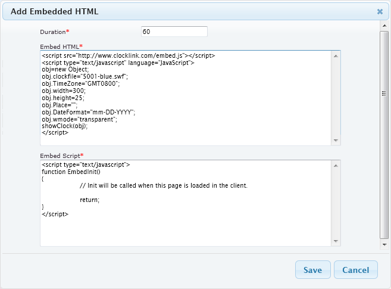

In Xibo it is possible to embed html code as content in a region e.g. a clock or weather forcast
To get Xibo to show embedded HTML with Active-X content, you would need to adjust the security settings of IE so that local files were allowed to run active content by default. This can be done in Tools -> Internet Options -> Advanced -> Security -> "Allow Active content to run in files on My Computer"
Add an Embedded
- Click the "Add Embedded" icon
- A new dialogue will appear:

- Enter the embedded html source. The example given above is for a digital Date/Time Display.
- Click "Save"
Below is another example to display an analogue clock face:
You can view the script source by right click on the page and select "View source"